exhibition
Piece by piece : CALLING BOOKS
2023 · Seoul · 10.27 — 11.12
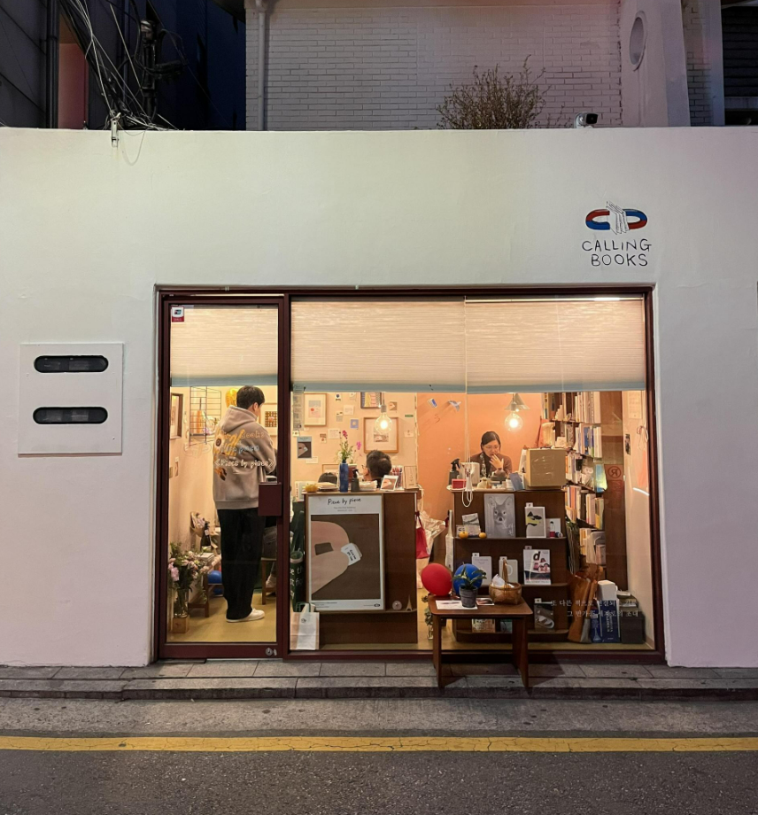
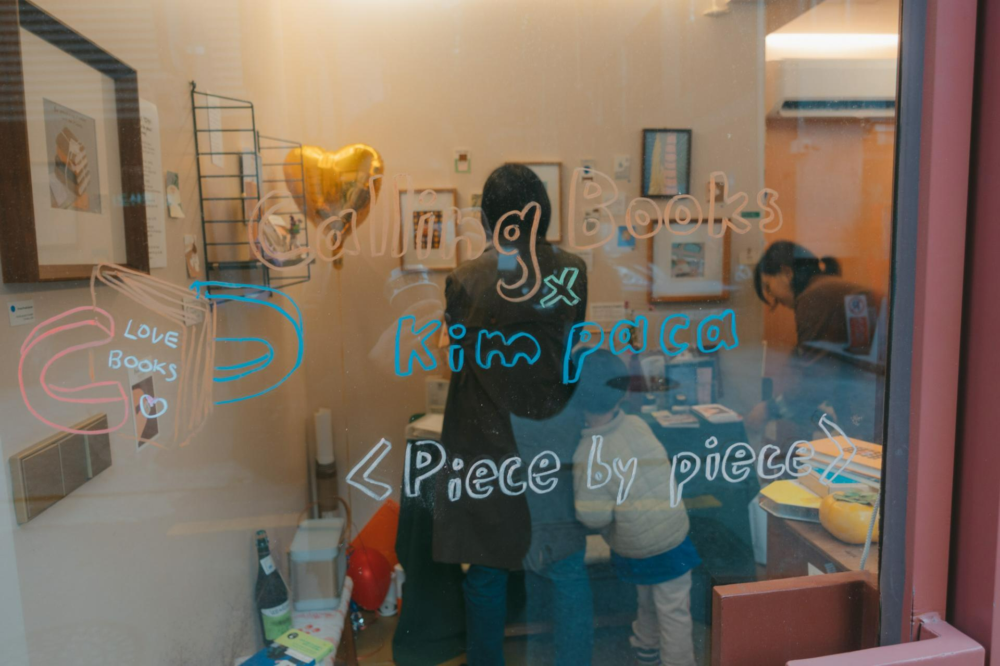
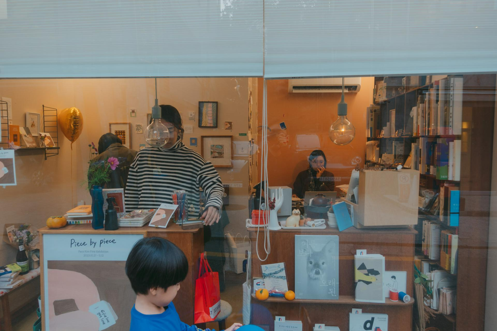
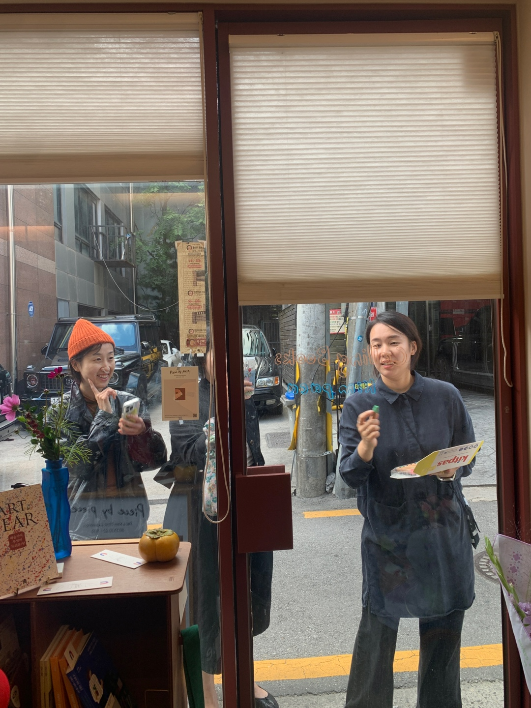
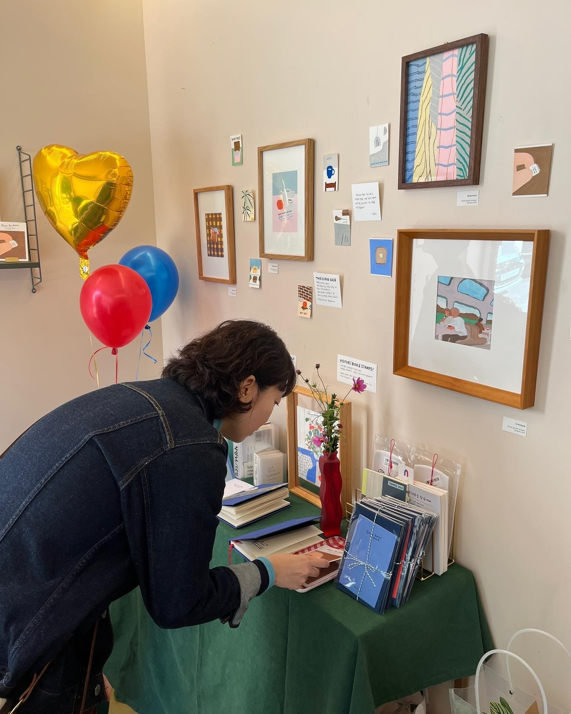
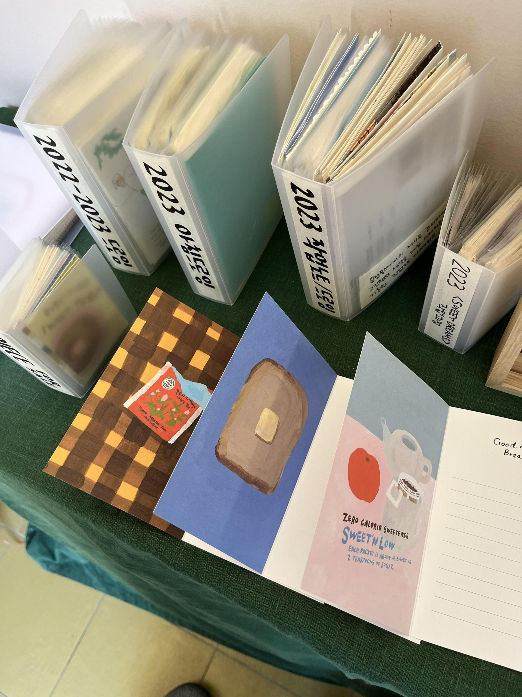
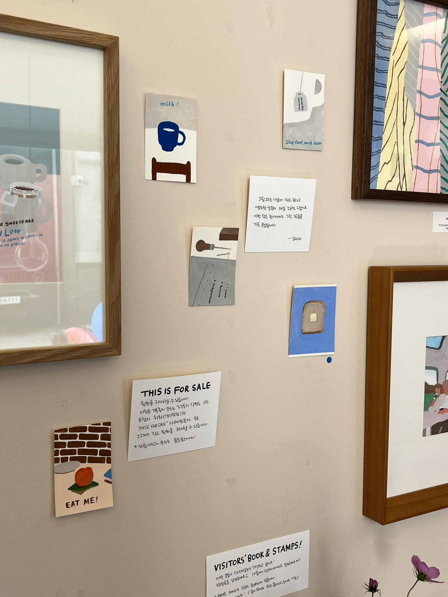

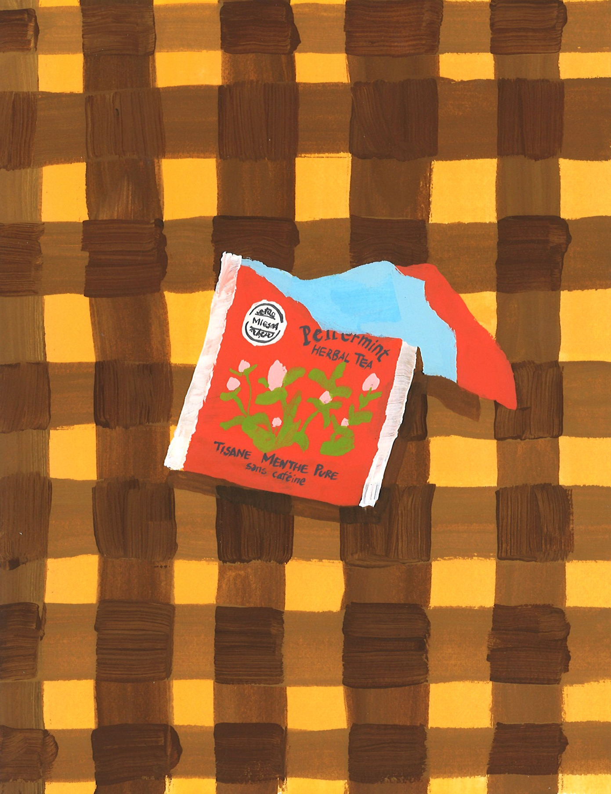
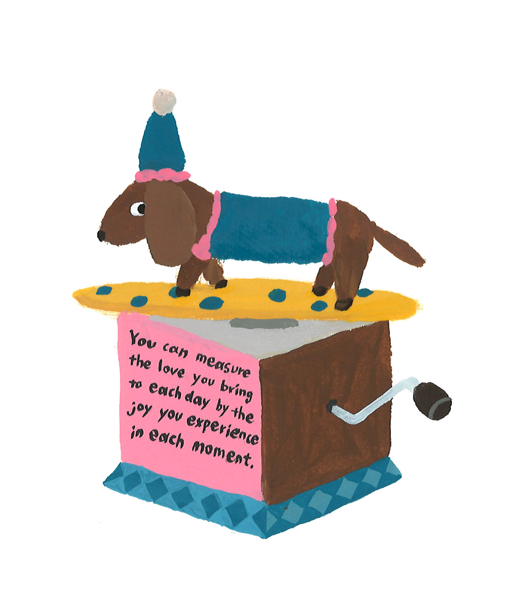
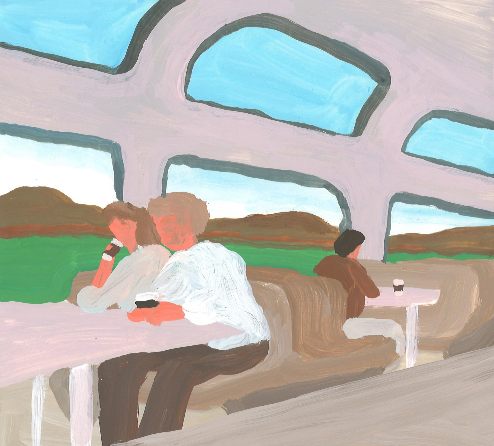
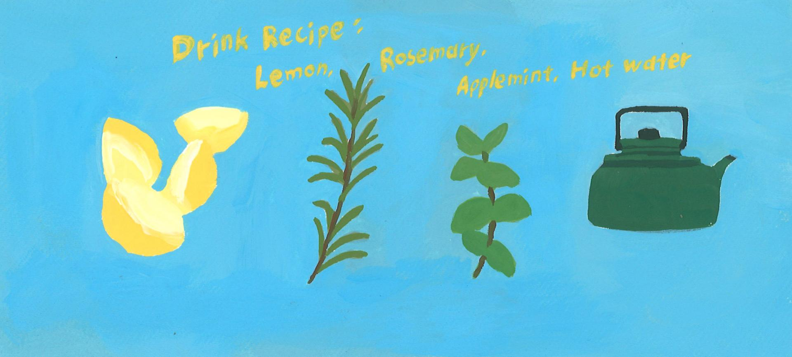
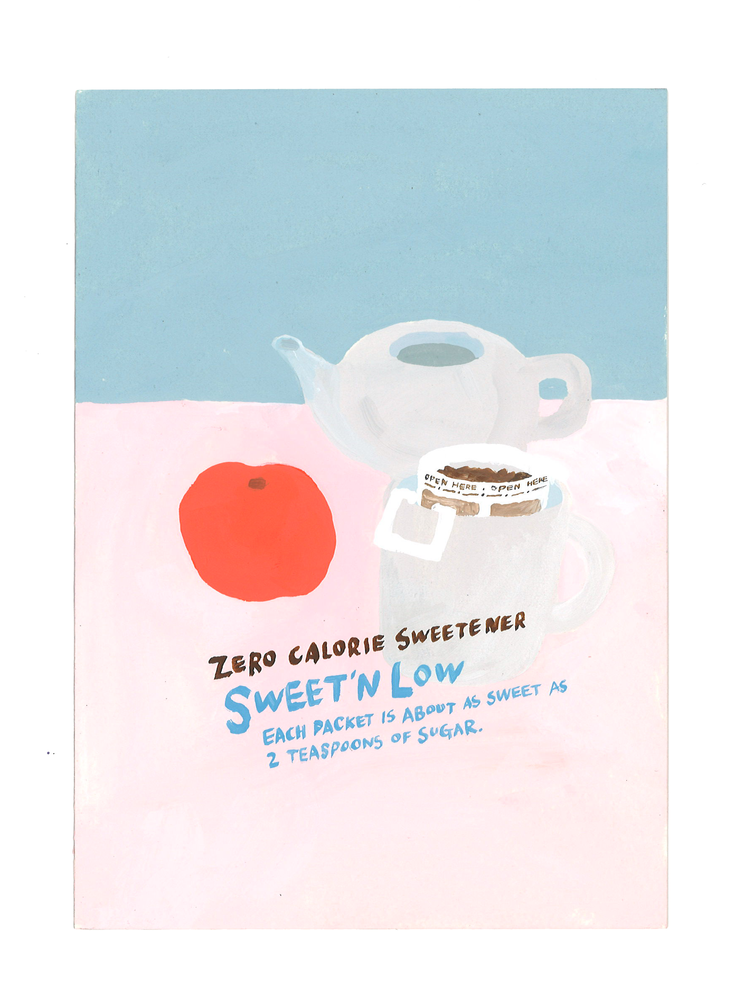
콜링북스에서 첫 전시를 열게 되었습니다. 좋아하는 작은 서점에서 전시를 준비하기 위해 그동안의 작업들을 모아놓고 보니, 조금씩 서서히 무언가를 만들고 있는 저를 발견했어요. 그래서 전시 제목도 piece by piece로 지었습니다.
콜링 북스가 창작자에게 묻다
piece by piece* 의 김파카 (@kimpaca)
*piece by piece: 조금씩, 서서히
1. 자기소개
안녕하세요! 저는 일러스트레이터 김파카라고 합니다. 제 이름은 당연히 필명이고요. 알파카의 파카에서 따왔어요. 생긴 것이 조금 닮았다고 해서 지어진 별명이었는데, 검색해도 잘 나오는 것 같고, 입에 착 감겨서 계속 쓰고 있는 귀여운 이름이에요. 손으로 하는 건 다 좋아해요. 똑같은 이야기를 전달해야 한다면 말로 설득하는 것보단 이미지로 표현하고 보여주는 것이 더 쉬운 유형의 사람인 것 같아요.
2. 그림을 전공하지 않았는데, 어떻게 현재의 일을 해나가게 되었나요?
원래 제 전공은 공간디자인이에요. 대기업 플래그십 스토어나 브랜드 매장의 아이덴티티를 찾고 공간으로 기획하는 일을 5년 동안 했어요. 그러다 식물을 팔아보기를 또 5년 했고요. 그때부터는 내가 잘하는 걸 뾰족하게 잘 알고 있어야겠다는 생각을 했고, 관심 있는 주제 하나로 글을 꾸준히 썼어요. 그게 브런치북에서 대상을 받았고, 처음으로 책을 내게 되었어요. 그림으로 돈을 벌 때가 제가 원하는 방식으로 인정받는 기분이라 가장 좋아요.
3. 글과 그림을 경계 없이 이어가는 원동력이 있다면?
제가 조카랑 영상통화로 글쓰기 수업을 한 적이 있었는데, 조카가 쓴 문장이 기억에 남아요. "그림을 그릴 때면 신나고, 글을 쓸 땐 (어렵지만) 뿌듯하다." 딱 하나 공통점이 있다면 초안이 필요하다는 것. 글 쓸 땐 자기 검열 없이 일단 끄집어내는 게 좋고요. 그림 그릴 땐 잘 그리려는 욕심 없이 일단 끄적여보는 게 좋더라고요.
4. 아침에 대한 사랑이 각별한 이유가 있을까요?
저는 사실 아침잠이 많은 사람인데요, 언젠가 새벽 수영을 해보기로 결심했어요. 너무 재밌는 거예요! 일찍 일어난 김에 아침에 그림을 한 장씩 그려서 인스타에 올려보자는 마음으로 아침 드로잉을 시작했어요. 조그만 종이조각에 힘 빼고 낙서하듯 그리는 시간들이 쌓이면서 이유 없이 바쁘기만 했던 마음도 가벼워지더라고요.
5. 프리랜서, 작업실의 하루를 들려주세요.
월화수목금, 빼먹지 않고 거의 비슷한 시간에 출근해요. 일단 재밌으니까 계속하는 거 같아요. 작업실은 6명이 함께 쓰는 공간인데, 혼자만의 공간에서 집중하는 게 잘 맞는 사람일 거라고 막연하게 상상했었는데, 같이 모여서 각자의 일에 집중하고 가끔 수다 떨면서 고민도 털어내고, 그러다 보면 더 많은 양의 작업을 하게 되더라고요.
6. 혼자 일하는 사람으로 놓치지 않으려는 감각이 있다면?
혼자 머릿속으로 생각하고 기획한 건 무조건 옆에 있는 누구에게라도 얘기해 봐요. 무조건 일단 물어보기. 그게 최고예요.
8. 이번 전시, 어떤 부분을 보여주고 싶으신가요?
제가 처음으로 하는 전시거든요! 아침을 좋아하는 마음으로 그림을 그렸고 그 기분이 전달되면 좋겠어요. 림고님이 전해준 패키지 중에 좋은 문장들이 하나씩 쓰여있는 티백이 있었어요. "Peace of mind comes piece by piece" 거기에 쓰여 있던 문장에서 힌트를 얻었고 기분을 좋게 하는 조각들의 장면을 그렸어요. 이번 전시에서 각자만의 기분 좋아지는 조각들을 하나씩 발견하면 좋겠어요.
이번 전시 제목 〈piece by piece〉는 콜링 북스의 질문에 김파카 작가가 답하고 그 답변에서 이 단어를 골랐습니다. 조금씩, 서서히 그림으로 이야기를 들려주기 시작한 파카 작가의 첫 전시! 10월 27일부터 11월 12일까지 열립니다.
인터뷰 : 이지나 @lifeisjina by 콜링북스 @iam.callingbooks
인터뷰 : 이지나 @lifeisjina by 콜링북스 @iam.callingbooks
I held my first exhibition at Calling Books, a small bookstore I love. As I gathered my work to prepare for the show, I noticed myself slowly, quietly making something. That's why I named it piece by piece.
Calling Books asks the creator
piece by piece* — Paca Kim (@kimpaca)
*piece by piece: little by little, gradually
1. Introduction
Hello! I'm Paca Kim, an illustrator. It's a pen name — taken from "paca" in alpaca. My husband said I looked a little like one, and the nickname stuck. I love anything made by hand. If I need to communicate something, I find it easier to express it through images than through words.
2. How did you get here?
My original major was spatial design. I spent five years designing flagship stores and brand spaces for large companies, then another five years selling plants. Along the way I realized I needed to know clearly what I was good at. I started writing consistently about one topic (plants!), one piece a week for a year. That writing won an award on Brunch, led to my first book. Getting paid for drawings felt most like being recognized in the way I wanted.
3. Writing and drawing without borders — what drives you?
My niece once said: "Drawing makes me excited, writing makes me proud (even though it's hard)." The two feel completely different, but they share one thing: both need a rough draft. For writing, get it out without self-censorship. For drawing, sketch without trying to make it good.
4. Your love of mornings?
I'm actually someone who loves sleeping in. But I once challenged myself to try early-morning swimming — and I loved it. That led to starting a morning drawing practice: one small drawing each morning. Doodling on a small scrap of paper, without pressure, gradually lightened a heart that had been busy for no good reason.
5. A day in the studio?
I go in at almost the same time every weekday. I keep going because I enjoy it. I share a studio with six people, all doing different things. I used to imagine I needed solitude to focus, but working alongside others, concentrating together, chatting through worries — I actually get more done that way.
6. One instinct you never let go of?
Whatever I'm thinking or planning alone, I always tell someone nearby. Just ask first. Always.
8. About this exhibition
This is my first ever exhibition. I hope the feeling of drawing from a place of genuine joy comes through. Among the packages Rimgo shared with me was a teabag with a sentence printed on it: "Peace of mind comes piece by piece." That gave me the idea. I drew scenes of small moments that make you feel good. I hope everyone who visits finds their own little piece.
The title piece by piece was chosen from Paca Kim's own words during this interview. This is her first exhibition — little by little, gradually beginning to tell stories through drawing. October 27 to November 12.
Interview: Lee Jina @lifeisjina by Calling Books @iam.callingbooks
Interview: Lee Jina @lifeisjina by Calling Books @iam.callingbooks
작품 촬영 이동규 @leedongkyu_